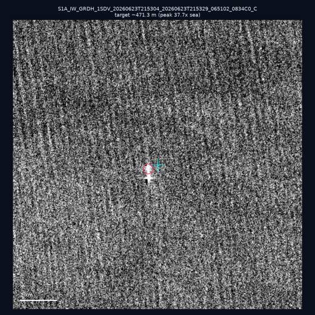
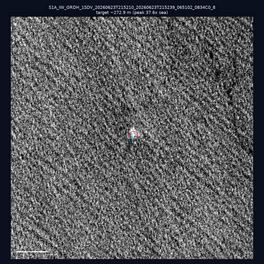

GFW 判定為「未匹配 AIS」的 322 筆 SAR 偵測，先剔除 20 筆風機／平台等固定設施，再以港務局本地 AIS（18,779 艘、推算至 Sentinel-1 過境時刻）重新比對，對上 0 筆假暗船（覆蓋範圍內重比對率 0.0%），剩下 302 筆為殘餘暗船；其中 302 筆落在本地 AIS 保留期之外，無法驗證。Of 322 SAR detections GFW flagged as AIS-unmatched, 20 were removed as fixed infrastructure (wind farms / platforms), then re-matched against local Port Bureau AIS (18,779 vessels, dead-reckoned to the Sentinel-1 overpass instant): 0 turned out to be false dark ships (0.0% re-match rate within coverage), leaving 302 residual dark detections — of which 302 fall outside local AIS retention and cannot be verified.


| 日期Date | 座標Position | 海域Area | 法域Zone | 成像時刻Acquired | 判定Verdict | 估計長度Length | 峰值比Peak |
|---|---|---|---|---|---|---|---|
| 2026-06-23 | 22.63, 119.56 | southwest | contiguous_zone | 21:53 | ⚪ 無目標No target | — | — |
| 2026-06-23 | 21.63, 120.03 | southwest | eez | 21:53 | ⚪ 無目標No target | — | — |
| 2026-06-23 | 22.04, 119.43 | southwest | eez | 21:53 | ⚪ 無目標No target | — | — |
| 2026-06-23 | 24.01, 121.88 | east | territorial_sea | 21:52 | ✅ 確認實體目標Confirmed target | ~272.9 m | 37.6× |
| 2026-06-23 | 25.18, 121.73 | east | internal_waters | 09:52 | ⚪ 無目標No target | — | — |
| 2026-06-23 | 25.23, 121.74 | east | internal_waters | 09:52 | ⚪ 無目標No target | — | — |
| 2026-06-23 | 22.49, 120.29 | southwest | internal_waters | 21:53 | ⚪ 無目標No target | — | — |
| 2026-06-23 | 25.33, 121.88 | east | internal_waters | 09:52 | ⚪ 無目標No target | — | — |
| 2026-06-23 | 21.34, 119.48 | southwest | eez | 21:53 | ✅ 確認實體目標Confirmed target | ~471.3 m | 37.7× |
| 2026-06-23 | 22.3, 120.53 | southwest | internal_waters | 21:53 | ⚪ 無目標No target | — | — |
| 船舶Vessel | 類型Type | 分數Score | 法域Zone | 海纜Cable |
|---|---|---|---|---|
| THANH TRUC 106000000 | cargo | 30 | internal_waters | — |
| SAI YANG DIAN ZI 413000000 | cargo | 28 | eez | — |
| HOSM AIS TEST SHIP 100900000 | cargo | 28 | eez | — |
| MMSI-357817958 357817958 | cargo | 25 | eez | — |
| DONG FANG FUZHOU 477271500 | cargo | 25 | internal_waters | — |